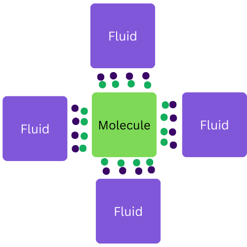

I. What is COSMO-RS ❓#
COSMO-RS (Conductor like screening model for real solvents) is a theoretical approach used to calculate solvation phenomena in chemistry. It provides a way to estimate the thermodynamic properties of fluid systems based on the molecular structure. It predicts how a solvent will behave and interact with a solute by estimating different thermodynamic parameters such as partition coefficients, surface tension, and vapor pressure.
A bit of history 📜#
The computational description of molecules in fluid phase represented a challenge, for the current methods at the time struggled to capture the complex interactions between the molecules like polarization effects and cooperative interactions.
In the 1970s, research concentrated on treating the solvent as a continuous medium surrounding the molecule. The models in use employed a concept known as ‘dielectric theory’, which helps to understand how the solvent’s electric field influences the solute. These models are called SCRP (self-consistent reaction field), and they create a boundary around the solute to simulate the solvent’s effect, similar to the image below:

The iterative process is to calculate how the solvent’s electric field changed due to the solute and then adjusting the solute’s properties accordingly until consistency is reached. This is defined as the stable state where the solute’s properties remain constant and do not change upon additional calculations.
COSMO-RS comes into play 🎲#
The COSMO-RS method is used to calculate this process by determining the dielectric screening charges and energies, using a surface around the molecule that resembles the van der Waals or vdW surface. This surface is like an invisible bubble that outlines the shape of a molecule, accounting for the site of each atom as if they were spheres. This method assumes the surface acts like a conductor. If a solvent can provide the right surface charge densities, it can screen the solute as effectively as a conductor.
Screening means that the electric fields are counteracted, resulting in no net electric field. Therefore, instead of viewing fluids as interacting through complex fields, they are visualized as ideally screened. In the 1995 paper written by Andreas Klamt it shows a perfectly screened molecule, like the image below, where the purple and green points (representing the electrons) perfectly cancel each other.

The σ-profiles 📊#
However, real molecules do not have “flat faces”, so a new concept called typical contact segments is introduced, which are portions of the molecule’s surface used to approximate interactions. The size of these segments is chosen to ensure that neighboring segments are likely to interact with different neighboring molecules.
Each segment has a uniform surface charge density - so it can be represented as an average charge density - facilitating calculations. The number of segments \(n_{x}\) is calculated using the screening area \(A_x\) , which is the total surface involved in interacting with the solvent, and the effective segment area \(A_eff = \pi*Reff^2 \), where \(R_{eff}\) is the effective segment radius. Klamt specifies that an effective segment radius of 1 Å (angstrom) works well. The formula is:
\(n_{x} =A_x/A_eff \)
By averaging the surface charge densities over typical contact segments of molecules, we can obtain a probability function \(p_x(\sigma)\) i.e. σ-profile, which is like a histogram that shows the distribution of the screening charge density over the molecule’s surface. For solvents that contain mulitple components, the σ-profile is the weighted sum of the component’s profiles:
\(p_S(\sigma) = \Sigma x_i n^x_i p^X_i(\sigma) / \Sigma x_in^x_i \)
where:
\(x_i\) is our molar concentration
\(n^x\) is the contact segment
\(p^X_i(\sigma)\) is the effective probability function, which calculates the probability of finding an average \(\sigma\) on a typical contact segment
Real fluids vs ideal ones 💧#
As mentioned, fluids are being visualized as ideally screened where two segments with opposite surface charge densities interact perfectly so their net energy is zero. However, with real fluids it is not possible due to entropy and the non-ideal nature of molecular interactions; therefore, they do not cancel perfectly each other’s charges. These non-ideal parings result in a “misfit energy”.
The misfit energy represents the interaction energy of two neighboring segments with unequal surface charges. This situation occurs because the solute’s surface segments pair with neutral surface segments, resulting in a mismatch or misfit energy that balances the non-ideal screening. The misfit energy quantifies the interaction energy of two segments next to one another with radius \(R_{eff}\) and surface charges \(\sigma_1, \sigma_2\). Since we are considering our solute unscreened, the total misfit energy is equal to the negative of the ideal screening energy. The total misfit energy is given by:
\( E^x_{mf} = 1/2 \alpha \Sigma \sigma_v^2 = 1/2 \alpha N^x \int p^x(\sigma)\sigma^2 d\sigma\)
with \(α=1.2π^{5/2}R_{eff}^3/(4πϵ_0)\) a constant that scales the interaction energy based on the geometry and properties of the segments
Molecular arrangements & the Ground State 🧩#
The arrangement of the surface segments is limited by the shapes of the molecules; however, to simplify the calculations COSMO-RS neglects these constraints, meaning that the segments are treated as if they can pair freely. This ‘decoupling’ allows the liquid to be modeled as a collection of \(N\) segments, each with a surface charge density, \(\sigma\). The distribution of these segments is what we call the σ-profile, \(p_s\). Each segment pairs with another segment so we have N/2 pairs and (N/2)! combinations.
Klamt further explains the ground state of decoupled segments which is the arrangement of segments that results in the lowest misfit energy. This is achieved by ordering and pairing the segments with its correspoinding positive and negative charges \((\sigma_i + \sigma_{-i})\). The ground state misfit energy indicates how well a fluid can screen its own molecules, ∴ a lower misfit energy means a better screening. The ground state misfit energy is given by the following equation:
\( E_s^{GS} = 1/2\alpha'\sum_{i=1}^{N/2}(\sigma_i + \sigma_-i)^2\)
In the examples section, we are gonna see the σ-profiles and analize them in depth to get a better understanding of the theory.
What is openCOSMO-RS ❓#
This model improves the predictive accuracy of the fluid phase thermodynamics by incorporating multiple segmental descriptors. The screening charge density \(\sigma\) is still the main descriptor, but additional ones such as the polarity counterpart screening charge density introduced by Andreas Klamt, \(\sigma_⊥\), are now being used to improve the model. It is calculated by the formula below:
\(\sigma⊥ = \sigma_\alpha - 0.816\sigma_\alpha^0 \)
Some additional characteristics of the model:
Open Source: it allows people in the academic community to use, evaluate and develop the model
Extended σ-Profile Generation: the new algorithm includes multiple segment descriptors in addition to the screening charge density, as mentioned above.
RDKit/ORCA Workflow: It uses RDKit to generate conformers and ORCA for quantum chemical calculations, which makes it easier for more academic users to implement
Correction to the screening charge correlation: this correction involves an additional descriptor, denoted as σ⊥, which is derived from the screening charge density. This descriptor is used to refine the electrostatic interaction energy calculations. In a molecule, the electrostatic forces play a crucial role in determining how molecules interact with each other - the charge in one area can influence the charge in another area and determine if molecules will come together or move apart
More information about its implementation can be found here.
openCOSMO-RS 24a 💫#
The openCOSMO-RS 24a is a new and improved version of the open-source COSMO-RS model. This version is designed to predict solvation free energies using quantum chemical calculations from ORCA. More information about it can be found here
What is the solvation free energy, ΔGsolv? ⚡#
It is the amount of energy involved when a solute dissolves in a solvent. It is the energy change that occurs when the particles of the solute are surrounded and stabilized by the solvent molecules. This energy can be absorbed or released. It is a contributing factor in predicting how substances will behave in a solution.
A positive solvation free energy value shows that the process is not energetically favourable. This means that the solute wants to stay in the gas phase, whereas a negative value shows that the process is energetically favourable, meaning that the solute prefers to be in the solvent.